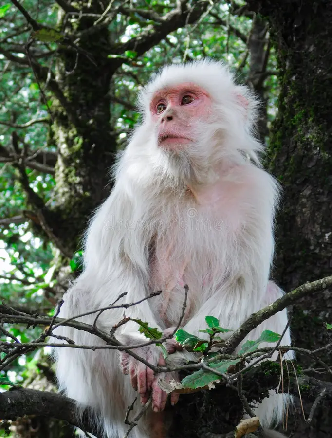
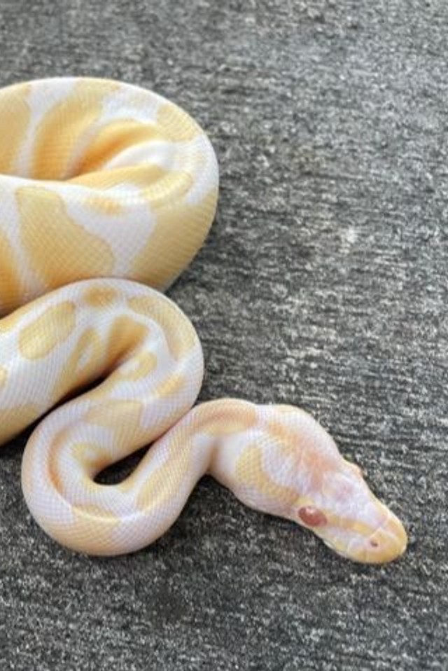
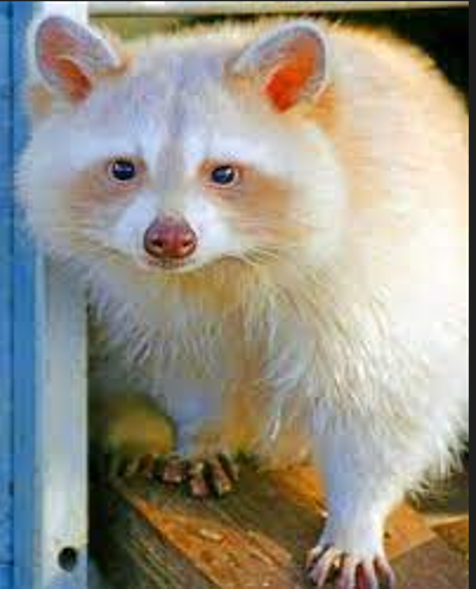

Accordion Example
Note: The data-bs-parent attribute makes sure that all collapsible elements under the specified parent will be closed when one of the collapsible item is shown.
Albino monkeys are a particular species born without any pigment in their bodies, skin, eyes, and hair.
These monkeys are more susceptible to skin diseases and sunburns because they have little to no protection from the sun.
Monkeys with Albinism are often quite pale in color and have red eyes.
They frequently have diminished fertility as well as eyesight issues. Their populations are typically small and remote as a result.

Albino alligators are alligators that lack the ability to produce melanin in their skin. This genetic defect gives their skin a yellowish white appearance and the eyes generally cast a pinkish hue due to the visible blood vessels in the colorless irises.

An albino snake is a type of snake that is born with a genetic abnormality known as albinism, which is a lack of pigmentation in the body and eyes. This leads to snakes that are white in color or may be lacking a particular coloration that is typical Albinism also typically causes a snake’s eyes to be solid red in color and may reduce the snake’s eyesight. Corn snakes and Burmese pythons are both fairly common types of albino snakes.

According to the Cleveland Museum of Natural History, only 1 in every 10-20,000 raccoons is born with albinism, an inherited genetic condition that lacks pigment in the hair, skin, and eyes.
